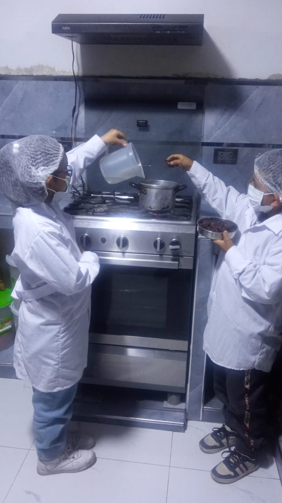
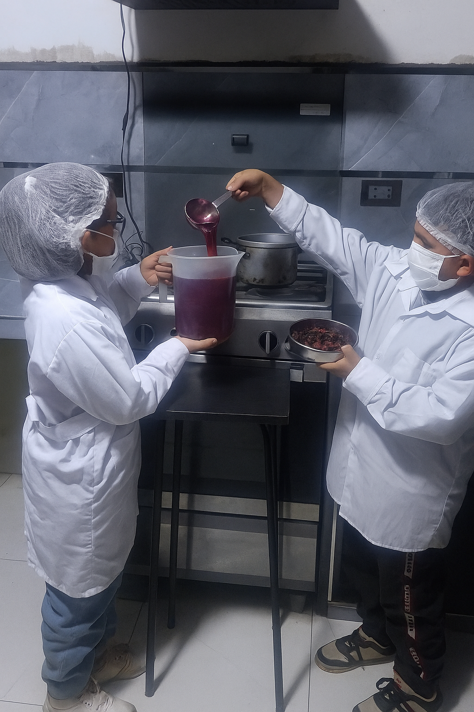
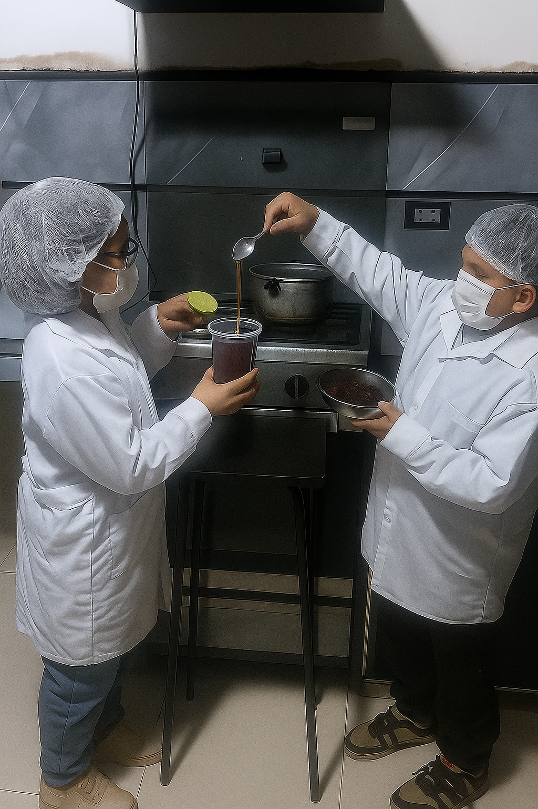

Inicio
Presentado por
Kahory Saavedra Ambrosio
Dylan Smith Gamonal Torres
Colegio
I.E. 1215 San Juan de Pariachi - 3ro "A"
Proyecto
LA FLOR QUE SALVA VIDAS
Investigación sobre los beneficios naturales de la Flor de Jamaica para la salud y nutrición de nuestra comunidad.
LA FLOR QUE SALVA VIDAS
Proyecto de Investigación
Un estudio sobre los beneficios naturales de la Flor de Jamaica para la salud y nutrición de nuestra comunidad.
Situación Problemática
El Problema Actual
EN LA ACTUALIDAD LAS ENFERMEDADES SON COMUNES POR EL MAL CLIMA, POR EL CONSUMO DE LAS COMIDAS CHATARRAS; HAY COMPUESTOS QUÍMICOS QUE TE CURAN PERO TE ENFERMAN EL HÍGADO, EL ESTÓMAGO, ADEMÁS SON DOLOROSOS POR LAS AMPOLLAS.
Pregunta de Investigación
Pregunta Clave
¿DE QUÉ MANERA INFLUYE LA FLOR DE JAMAICA PARA LA SALUD Y NUTRICIÓN DE LOS POBLADORES DE SAN JUAN DE PARIACHI?

Hipótesis
Nuestras Suposiciones
- LA FLOR DE JAMAICA ES RICA EN VITAMINA A, VITAMINA C, VITAMINA E, VITAMINA B, ADEMÁS ES UNA FUENTE DE MINERALES COMO EL HIERRO, FÓSFORO Y CALCIO.
- MEDIANTE EL CONSUMO DE LA FLOR DE JAMAICA SE PREVIENEN Y CURAN LAS DISTINTAS ENFERMEDADES COMUNES DE LAS PERSONAS, PORQUE SI NO SE PREVIENEN, SE VUELVEN CRÓNICAS.
Plan de Acción
Metodología
- VER VIDEOS DE CHARLAS QUE DAN EN EL HOSPITAL.
- BUSCAR INFORMACIÓN EN INTERNET.
- INVESTIGAR LA COMPOSICIÓN NUTRICIONAL DE LA FLOR DE JAMAICA Y LOS BENEFICIOS QUE APORTAN PARA MEJORAR NUESTRA SALUD.
- DISEÑAR UN ESTUDIO DE INVESTIGACIÓN PARA EVALUAR LOS EFECTOS DE LA FLOR DE JAMAICA EN LAS PERSONAS QUE LA CONSUMEN.
Recojo de Datos
Registro de Datos
REGISTRAR LOS DATOS DE LOS ANÁLISIS DEL CONSUMO DE LA FLOR DE JAMAICA.
FORMAS DE CONSUMIR LA BEBIDA DE LA FLOR DE JAMAICA
Ingredientes
Lo que Necesitamos
- 3 LITROS DE AGUA
- 1/2 LIMÓN
- 3 CUCHARADAS DE MIEL
- 50 G DE FLOR DE JAMAICA
Jamaica
Agua
Miel
Limón
Procedimiento
Paso 1
EN UNA OLLA, HERVIR TRES LITROS DE AGUA.
Paso 2
ECHAR LA FLOR DE JAMAICA Y DEJAR HERVIR POR 5 MINUTOS.
Paso 3
COLAR EN UNA JARRA EL AGUA DE JAMAICA.
Paso 4
AÑADIR 1/2 LIMÓN Y TRES CUCHARADAS DE MIEL.
Respuesta Final
Resultados Obtenidos
SÍ, LA FLOR DE JAMAICA INFLUYE EN EL CONSUMO NATURAL PARA PREVENIR ALGUNAS ENFERMEDADES Y NO CONSUMIR LOS MEDICAMENTOS QUE CONTIENEN MUCHOS COMPONENTES QUÍMICOS QUE A LARGO PLAZO TRAEN CONSECUENCIAS DE DAÑAR ALGÚN OTRO ÓRGANO COMO EL ESTÓMAGO, HÍGADO, SISTEMA NERVIOSO; AYUDA A REGULARIZAR LA SANGRE.
Conclusión
¡Misión Cumplida!
- CONSUMIENDO CORRECTAMENTE LA FLOR DE JAMAICA SE OBTIENE UN BUEN RESULTADO EN BENEFICIO DE NUESTRA SALUD.
- CON ESTE PROYECTO TAMBIÉN SE PUEDE INICIAR UN EMPRENDIMIENTO PARA MEJORAR NUESTRA ECONOMÍA Y A LA VEZ AYUDANDO A LAS PERSONAS A MEJORAR SU SALUD.
Referencias
Fuentes Bibliográficas
(Por completar - Aquí van las referencias bibliográficas del proyecto)